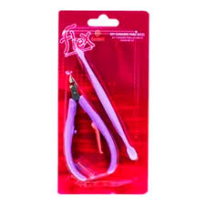

tudo sobre alicate
O alicate de unha é uma ferramenta essencial para o corte preciso e seguro das unhas, permitindo um formato mais reto e evitando problemas como unhas encravadas. Existem diferentes tipos, como os de unha, cutícula e pedicure, cada um adaptado para uma função específica. A escolha de um alicate de qualidade, feito de materiais resistentes como aço inoxidável, garante durabilidade e higiene. Para manter o instrumento em bom estado, é fundamental limpá-lo e esterilizá-lo corretamente. "
Por que aprender sobre perfume?
- "Pequena no tamanho, gigante nas possibilidades."
- "Seu novo look em uma só paleta."
- "As cores essenciais que cabem na sua bolsa."